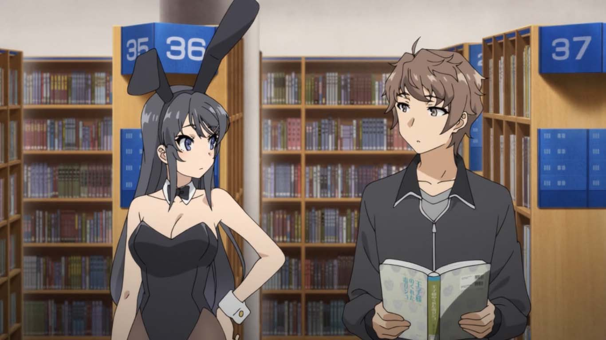

Mai Sakurajima(桜島 麻衣) mejor oconocida como Mai-San es la
protagonista femenina de Seishun Buta Yarou wa Bunny Girl
Senpai no Yume wo Minai ella hace su primera aparicion en el volumen 1 de la novela y tiene otras apariciones importantes en los de mas volumenes.
Mai es una actriz/modelo notable y asiste en tercer año en la preparatoria Minegahara.
En el primer capitulo del anime se nos presenta vistiendo un traje
de conejita color negro rondando por una biblioteca lugar
donde se encontraria con Sakuta Azusagawa el principal protagonista, su otra vestimenta mas conocida es su uniforme escolar
el cual es una camisa blanca con cuello,
sobre éste un suéter color crema, corbata roja, una falda
tableada color azul y zapatos marrones.

Mai es muy sensible, educada, sensata, servicial y amable.
Tambien es muy inteligente, está implícita en tener muy
buenas calificaciones e incluso ayuda a Sakuta a estudiar
en un momento. Aunque Mai puede ser algo dura y estricta
con Sakuta a veces, y llamarlo pervertido o idiota, también
es genuinamente afectuosa y amable con él, y a menudo dice
que lo ama más de lo que él piensa.
Antes de que su invisibilidad fuera interrumpida por Sakuta,
albergaba una profunda ansiedad por la posibilidad de que
pudiera ser olvidada por completo. También fue bastante
sensible sobre el tema de su pausa, ya que todavía albergaba
sentimientos amargos por las circunstancias que los causaron;
estos sentimientos han disminuido desde que comenzó a actuar
en otra agencia.
En general, aunque es emocional y sensible, Mai es una persona
muy agradable y amable. Ejemplos notables incluyen cuando Mai
denunció el incidente de hospitalización como falso por el bien
de Sakuta, y cuando le dio a Kaede un vestido como regalo y
para despertar interés de Kaede en regresar al mundo exterior.